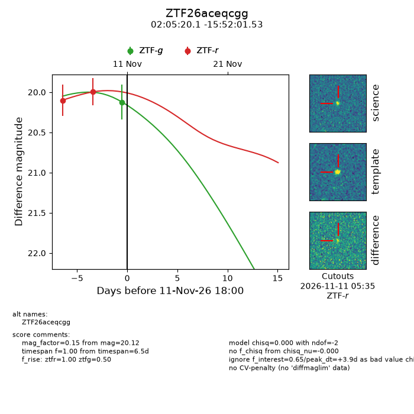
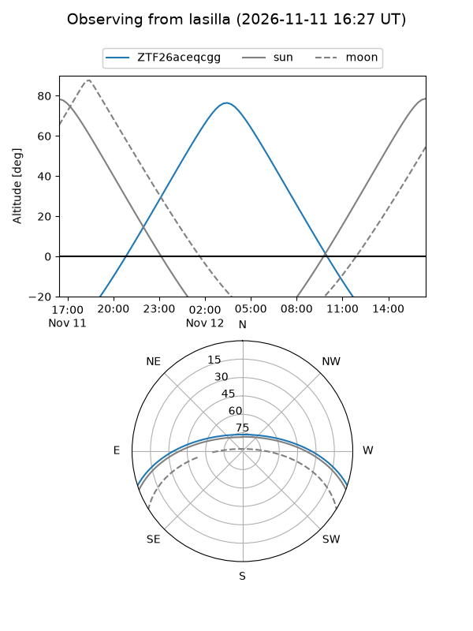
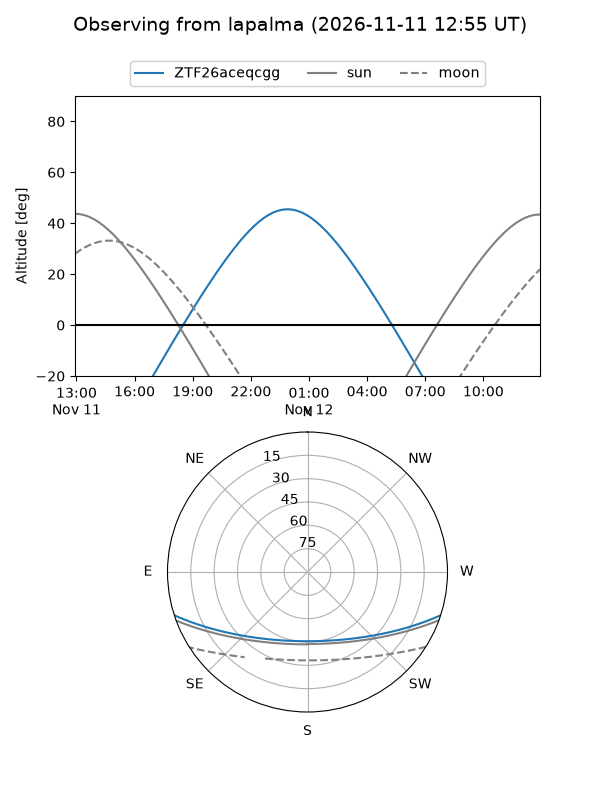
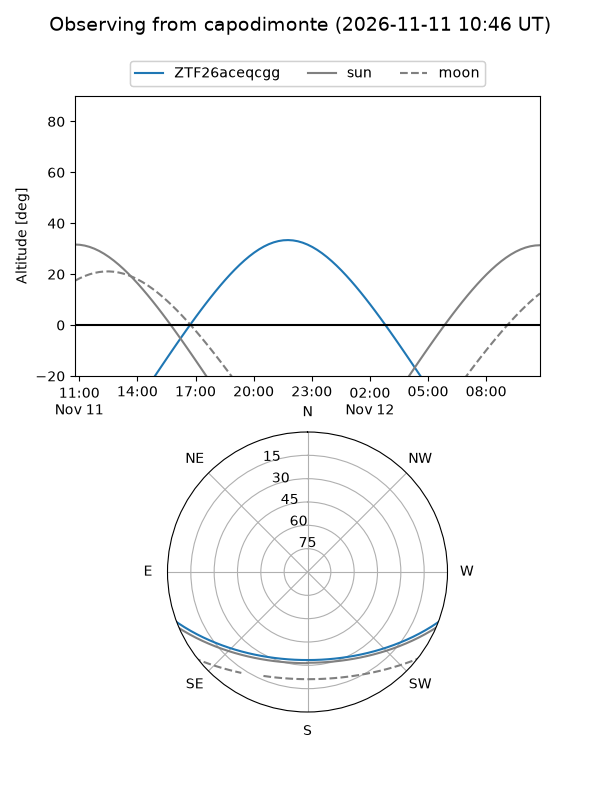
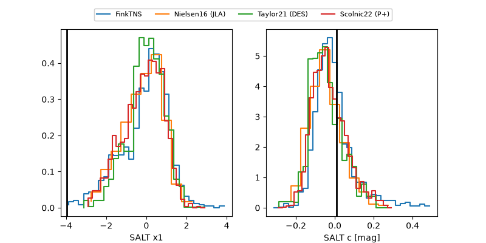

ZTF26aceqcgg
Target ZTF26aceqcgg at 2026-11-12 05:59
Aliases and brokers:
FINK-ZTF: ztf.fink-portal.org/ZTF26aceqcgg
Lasair-ZTF: lasair-ztf.lsst.ac.uk/objects/ZTF26aceqcgg
ALeRCE-ZTF: alerce.online/object/ZTF26aceqcgg
Direct TNS query: direct search
alt names
ZTF26aceqcgg (ztf,fink_ztf)
Coordinates:
equatorial (ra, dec) = 31.3338,-15.86709
equatorial (HMS+DMS) = 02:05:20.11,-15:52:01.53
galactic (l, b) = (183.3996,-69.49310)
Flags:
peak dt: +4.4
Photometry:
last ztfg=20.12, ztfr=20.00
1 ztfg, 2 ztfr detections
Lightcurve

Visibility



Additional plots
